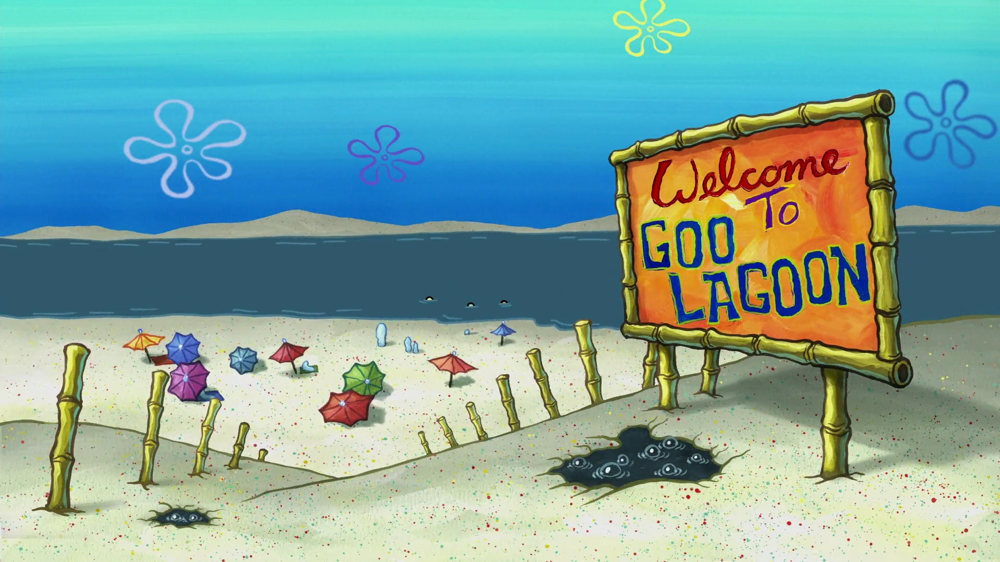

Welcome to Bikini Bottom Travels!
Bikini Bottom Travels is your ultimate travel blog for exploring the breathtaking beaches of the Philippines. Dive into detailed guides, stunning photos, and insider tips about the country’s most beautiful coastal destinations. Whether you're looking for hidden lagoons, white sandy shores, or vibrant marine life, we’ve got you covered!
Read More!
Coron, Palawan
Coron is a tropical paradise known for its crystal-clear turquoise waters, towering limestone cliffs, and pristine white sand beaches. Its underwater landscapes are just as stunning, with World War II shipwrecks and vibrant coral reefs that make it a haven for divers.
El Nido, Palawan
El Nido boasts dramatic limestone formations, hidden lagoons, and serene beaches with powdery white sand. Its Bacuit Archipelago is famous for its picturesque islands, turquoise waters, and rich marine biodiversity. Highlights include Small Lagoon, Big Lagoon, and the Snake Island sandbar. Sunset views over the ocean are nothing short of magical.
Gigantes, Iloilo
The Gigantes Islands are a cluster of islands in Iloilo, known for their raw, unspoiled beauty. Expect stunning beaches with powdery white sand, azure waters, and impressive rock formations. The Tangke Saltwater Lagoon and Cabugao Gamay Island offer iconic photo opportunities. It's also a seafood lover’s paradise, with fresh scallops being a local specialty.